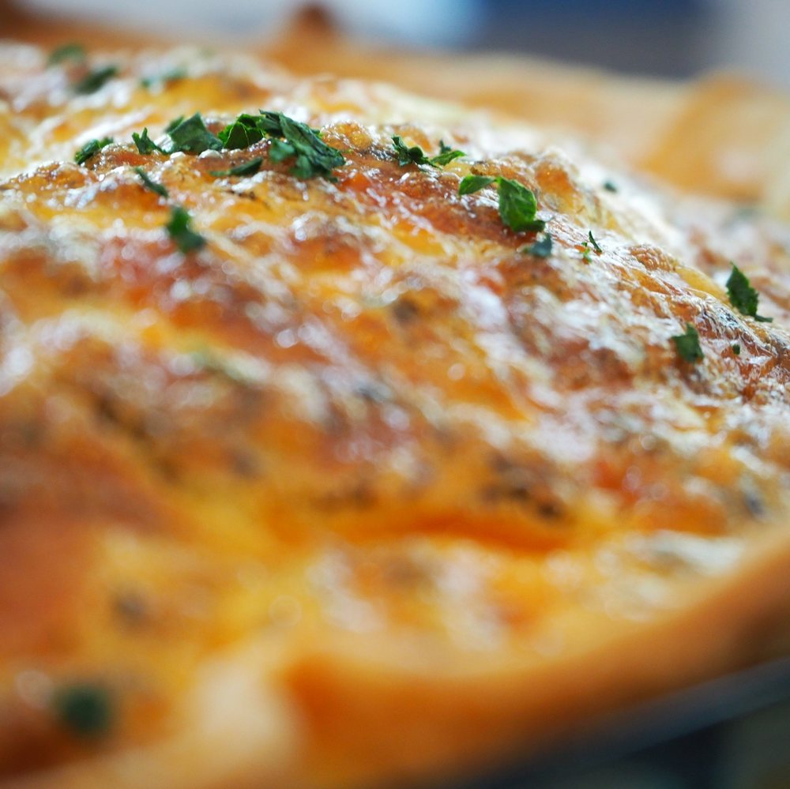

Egg Quiche
Quiches sound so fancy and complicated, but they're actually super easy to make! This article will walk you through making this "fancy" dish yourself (you can now also impress other people with your cooking skills).
Ingredients/Materials:
- 10 eggs
- 1.5 cups of milk
- Salt and/or other seasonings
- Whatever veggies, cheese, meat, or other extra stuff that you want
- Pie crust (optional)
- Baking tin
- Parchment paper (to prevent sticking)
Instructions:
*Note: You can make a crusted quiche or a crustless quiche. A crusted quiche will follow all of the same steps, except instead of pouring the egg mix into a baking tin, you'll pour it into a pie crust.
- Preheat your oven to 375°F
- Whisk up all of your eggs. Mix in your salt, seasnings, milk, and other ingredients in as well.
- Line your baking tin with parchment paper and pour your mixture into the tin (ir into your pie crust).
- Bake for 45 minutes. Test the middle with a toothpick to make sure it has baked completely (To do this, stick a toothpick into the middle of the quiche. If it comes out clean, then it's good)
- Take your quiche out of the oven and enjoy!

Image Description: Warm, fluffy egg quiche that's full of delicious goodness.